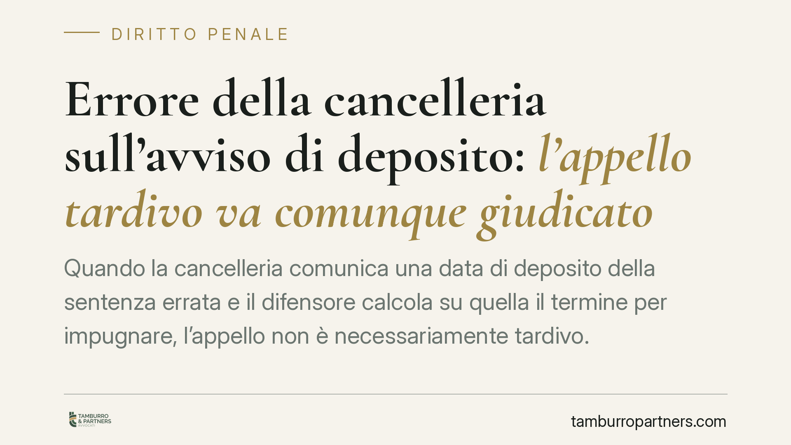

Errore della cancelleria sull'avviso di deposito: l'appello tardivo va comunque giudicato
Quando la cancelleria comunica una data di deposito della sentenza errata e il difensore calcola su quella il termine per impugnare, l'appello non è necessariamente tardivo. Un recente orientamento della Cassazione valorizza il legittimo affidamento sull'atto proveniente dall'ufficio. Vediamo cosa significa in concreto e come muoversi, distinguendo tra invalidità dell'avviso e restituzione nel termine.

Il caso: quando l'errore è dell'ufficio
La questione ricorre più spesso di quanto si pensi. Il difensore riceve dalla cancelleria un avviso di deposito della sentenza. Su quella data calcola il termine per proporre appello, ai sensi dell'art. 585 cod. proc. pen. Poi si scopre che l'avviso indicava una data diversa da quella reale del deposito. Risultato: l'impugnazione, corretta rispetto all'avviso ricevuto, risulta tardiva rispetto al deposito effettivo.
Secondo un recente arresto della Corte di Cassazione, in un'ipotesi di questo tipo l'appello non incorre automaticamente in decadenza. Il ragionamento poggia sul principio del legittimo affidamento: la parte che si conforma a un'indicazione proveniente dall'ufficio giudiziario non può subirne le conseguenze negative.
> Nota di cautela: gli estremi puntuali della pronuncia (numero, anno e sezione) vanno verificati sulle banche dati ufficiali prima di ogni utilizzo in atti. Riportiamo qui il principio, non un dato processuale da assumere acriticamente.
Inquadramento normativo
Il termine per impugnare decorre, di regola, dalla comunicazione o notificazione dell'avviso di deposito della sentenza, secondo il combinato disposto degli artt. 544 e 585 cod. proc. pen. La disciplina del deposito e delle comunicazioni è stata incisa dalla riforma Cartabia (D.Lgs. 10 ottobre 2022, n. 150), che ha rafforzato il canale telematico per depositi e comunicazioni: un elemento non secondario, perché l'errore materiale nell'avviso resta possibile anche nel sistema digitale.
È qui che va fatta una distinzione tecnica spesso trascurata. Esistono due strade diverse:
- Il termine non decorre. Se l'avviso è errato o inidoneo a far scattare validamente il termine, il dies a quo non si è mai perfezionato correttamente. In questo caso l'impugnazione non è tardiva perché il termine non era ancora maturato secondo l'atto ricevuto.
- La restituzione nel termine (art. 175 cod. proc. pen.). È un rimedio distinto: presuppone che il termine sia effettivamente decorso e chiede al giudice di rimetterlo, provando l'assenza di colpa. È un piano diverso, con presupposti e oneri probatori propri.
Le due vie non sono intercambiabili. Chi confida nell'affidamento sull'avviso errato dovrebbe anzitutto argomentare che il termine, così come comunicato, non si è validamente perfezionato; il ricorso all'art. 175 c.p.p. resta l'ipotesi subordinata quando quella prima linea non regga.
Errore dell'ufficio o errore del difensore?
Il discrimine è la riconoscibilità dell'errore. Il legittimo affidamento tutela chi si è ragionevolmente fidato di un dato proveniente dalla cancelleria. Non copre, invece, l'errore di calcolo imputabile al difensore né la negligenza nella verifica di dati palesemente incongruenti.
Se l'avviso indicava una data manifestamente incompatibile con gli atti già in possesso della difesa, l'affidamento può risultare non meritevole di protezione. La linea di confine passa da qui: l'errore deve essere dell'ufficio e non altrimenti riconoscibile con l'ordinaria diligenza professionale.
Un orientamento, non una regola scolpita
È opportuno leggere la pronuncia come contributo a un orientamento, non come approdo definitivo. La materia è delicata e la valutazione resta ancorata alle circostanze concrete: contenuto dell'avviso, canale di comunicazione, condotta della difesa. Precedenti conformi rafforzano la linea, ma non trasformano l'affidamento in una scriminante automatica.
Cosa fare in concreto
- Conservare l'avviso ricevuto in ogni sua parte (data, canale telematico, ricevute di consegna): è la prova documentale dell'affidamento.
- Verificare sempre la data reale di deposito in cancelleria, incrociandola con l'avviso: se emerge una discrepanza, va documentata subito.
- In caso di divergenza, calcolare il termine su entrambe le date e, quando possibile, è opportuno depositare l'impugnazione secondo il termine più prudente.
- Impostare l'atto sulla non decorrenza del termine come argomento principale e prevedere, in subordine, l'istanza di restituzione nel termine ex art. 175 c.p.p.
- Verificare gli estremi della giurisprudenza citata sulle banche dati ufficiali prima di richiamarla in atti.
Una tutela che non è automatica
Il principio del legittimo affidamento offre una difesa concreta, ma non un salvacondotto. Ogni valutazione dipende dalla riconoscibilità dell'errore e dalla diligenza dimostrata. Nessun esito è garantito: la decisione resta rimessa al giudice, che pesa le circostanze del singolo procedimento.
Contributo informativo a cura di Tamburro & Partners – Avv. Giuseppe Tamburro. Non costituisce parere legale.
Ogni condominio ha una storia a sé.
Se gestisci un'amministrazione e vuoi un confronto su una specifica questione condominiale, scrivi allo studio. Ti rispondiamo entro un giorno lavorativo.